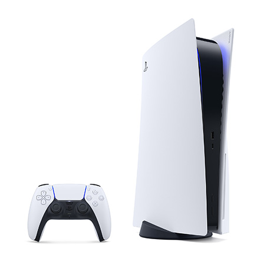
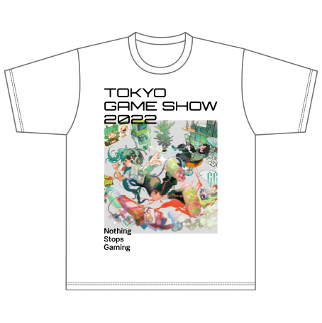

选择 "SOWN入围 "活动
“SOWN2022 Finalist” Prediction Campaign
“SOWN2022 Finalist” Prediction Campaign
Vote now! Campaign Deadline: September 6 (Tuesday)
At TOKYO GAME SHOW, this year again, with the support of the sponsor companies (Sony Interactive Entertainment, Nintendo, Kodansha Game Creator's Lab, iGi indie Game incubator, ELSA Japan and BenQ Japan), 81 indie game developers are exhibiting as “Selected Exhibit”.
From the 78 works, the SENSE OF WONDER NIGHT (SOWN) screening committee selects 8 works (SOWN2022 finalists) that match the purpose of "SOWN" and will be presented at SOWN2022 to be held on Friday, September 16th. (The presentation will be streamed online.)
Let’s select 3 works that you think will remain in the "SOWN2022 finalist." We will feed back your supportive comments to the developers.
We will present the prize of your choice from "PlayStation®5" and "TOKYO GAME SHOW 2022 Official T-shirt" in order of the number of votes whose recommended title was selected as a finalist. If there are many people with the same number, the winner will be decided by lottery. The announcement of the winner will be replaced by shipping.
Please come and join us!
How to vote
How to vote
You can check 78 exhibitor for the indie game “Selected Exhibit” from the list below. Please select 3 works that you think will remain in the "SOWN2022 finalist.”
Select 3 SOWN Finalist and Vote!
After you choose 3 works to vote, apply from below.
↓ ↓ ↓
TGS2022 presents “PlayStation®5” or " TOKYO GAME SHOW 2022 Official T-shirt" in order of the number of votes whose recommended title was selected as a finalist. If there are many people with the same number, the winner will be decided by lottery. The announcement of the winner will be replaced by shipping.
-

PlayStation®5 (CFI-1100A01)
Winner: 2 units *1
©2020 Sony Interactive Entertainment Inc. -

TOKYO GAME SHOW 2022 T-shirt
Winner: 30 shirts *2
*1 Products are sold only for Japan. Please be noted that overseas usage is not covered by the warranty.
*2 Unisex / L size only
Voting Period
Voting Period
Wednesday, August 24 to 23:59:59 Tuesday, September 6, 2022 *Japan time
Notice
Notice
*Only one Vote is allowed per person.
*We cannot accept exchanges, refunds or returns of prizes.
*Vote from this website. It is not acceptable to apply by email, phone or fax.
*Voters must bear the communication charges for voting.
*TGS Management Office will replace the prize announcement with the shipping of the prize.
*The prize will be shipped in October 2022, but it may change without notice.